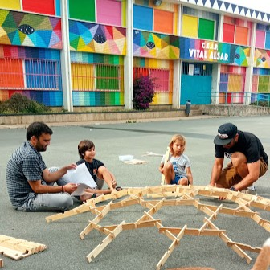
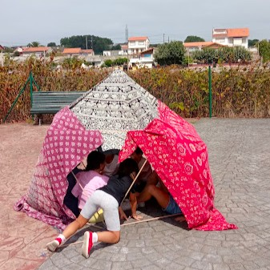
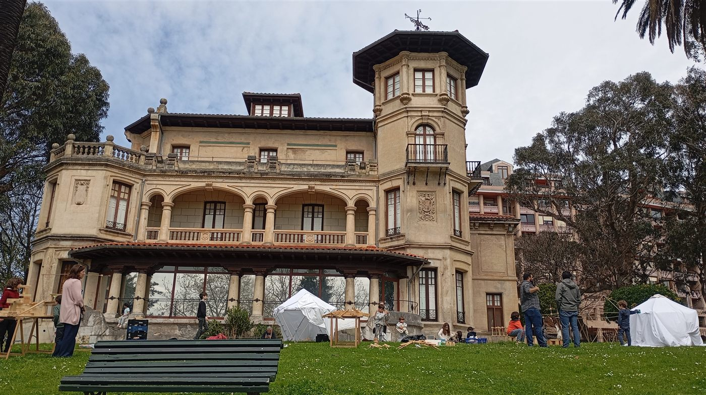
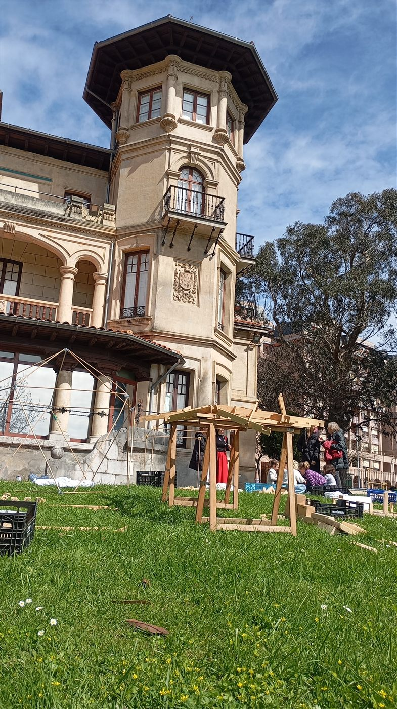
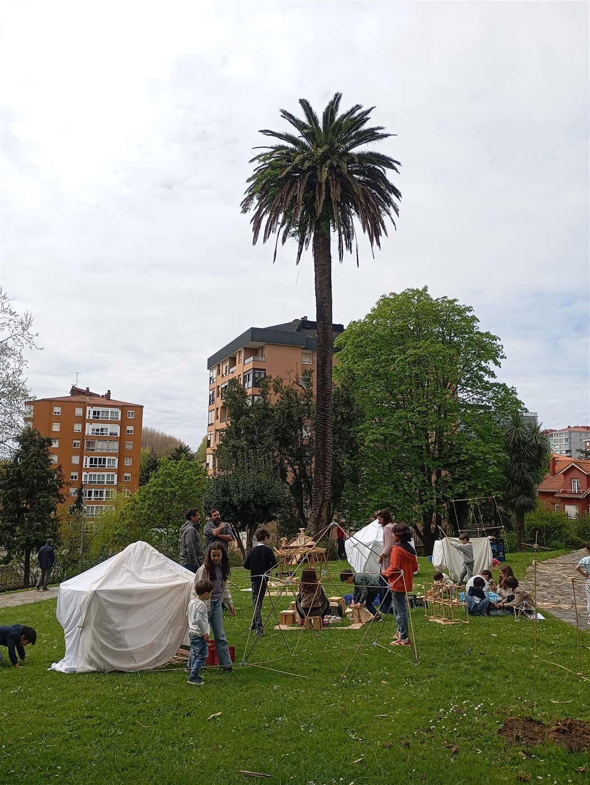
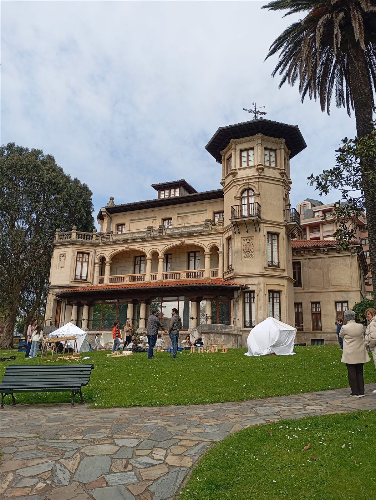
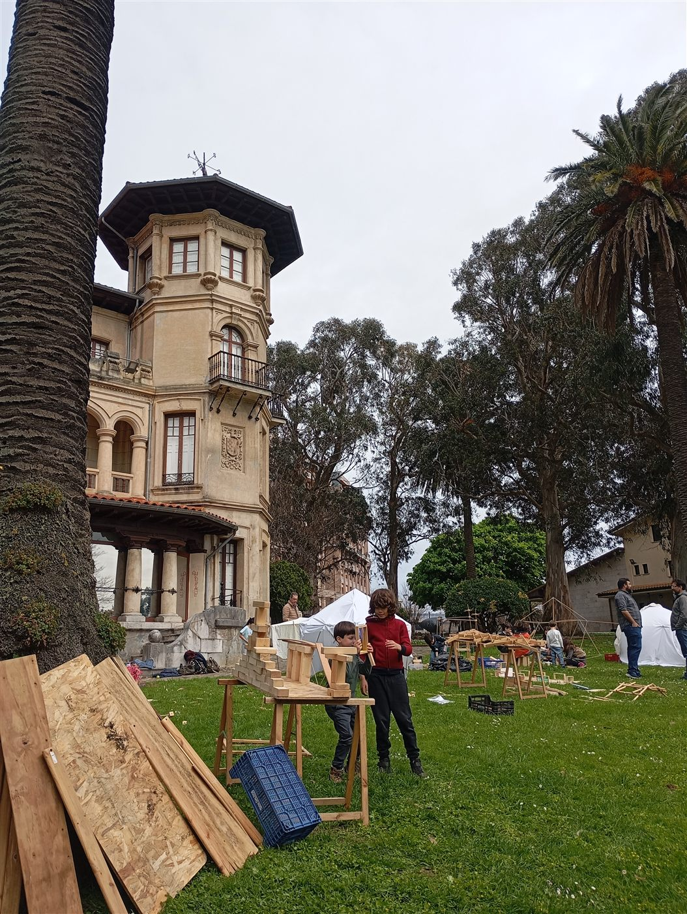
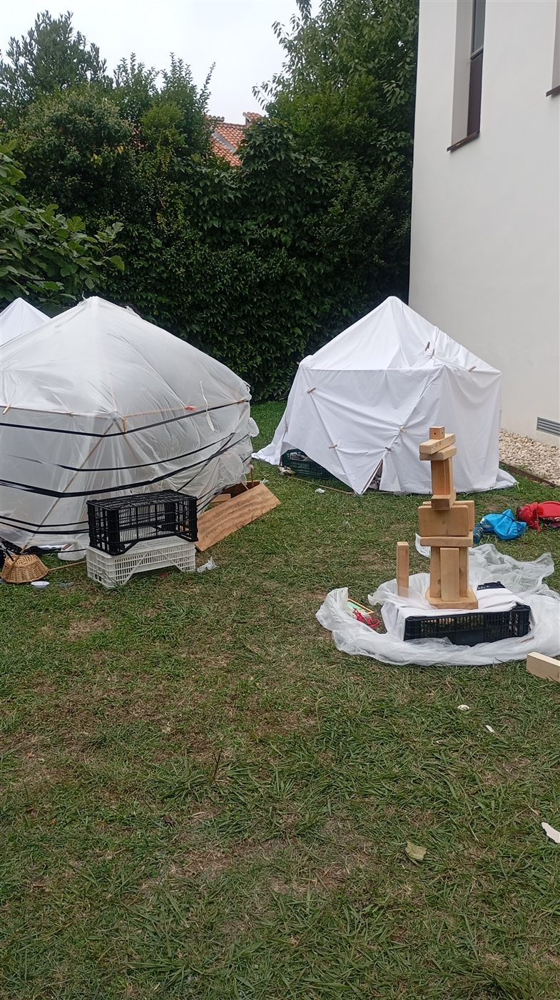
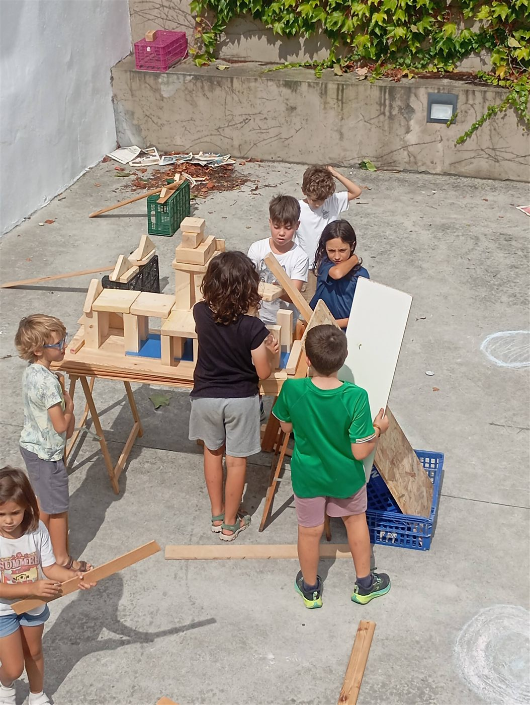

El colegio como eje
Durante una semana compartiremos la experiencia con sus alumnos para explorar otras formas de aprender, jugar y relacionarse con el espacio.
El último día, por la tarde, la experiencia se abrirá también a las familias.


Coloniales Espacios de aprendizaje Santander
CARTOGRAFÍAS LÚDICAS · EDICIÓN 2026
Una ciudad para jugar, explorar y descubrir.
01 · Colegio 02 · Barrio 03 · Parque
Santander Playground: Cartografías Lúdicas es una experiencia que invita a niñas y niños a explorar, jugar, imaginar y transformar los espacios que forman parte de su vida cotidiana, y a las personas adultas a observar, participar y acompañar en ese recorrido.
El camino que conecta los enclaves.
Las tramas lúdicas son los recorridos cotidianos que conectan tres enclaves propios de la vida infantil —escuela, barrio y parque—, entendiendo estos espacios y los trayectos que los unen como un único hábitat de juego, aprendizaje y autonomía infantil.
Cada trama lúdica pertenece a un barrio y conecta tres enclaves cercanos:
Durante una semana compartiremos la experiencia con sus alumnos para explorar otras formas de aprender, jugar y relacionarse con el espacio.
El último día, por la tarde, la experiencia se abrirá también a las familias.
Buscaremos una zona urbana próxima al colegio —una calle, plaza, espacio degradado o lugar con potencial de juego— donde desarrollar parte de la experiencia.
Terminaremos la trama en el parque o plaza más cercano al colegio con una jornada de juego libre en familia.
Santander se dibuja jugando.
Cada trama lúdica incorpora nuevos lugares, recorridos y experiencias. A medida que avancemos, el mapa irá creciendo y nos permitirá descubrir Santander desde una perspectiva diferente: la mirada de quienes la recorren cada día.
Tu cole también puede estar en el mapa: escríbenos y se hará sede.
Centros educativos de Santander · Pulsa un hexágono para ver el centro.
3 barrios · 9 enclaves · 1 cartografía

🏫 Colegio[En confirmación]
📍 Zona urbana[En confirmación]
🌳 Parque / plaza[En confirmación]

🏫 Colegio[En confirmación]
📍 Zona urbana[En confirmación]
🌳 Parque / plaza[En confirmación]

🏫 Colegio[En confirmación]
📍 Zona urbana[En confirmación]
🌳 Parque / plaza[En confirmación]
Jugar también es una forma de explorar.
Durante Santander Playground utilizaremos el juego, la construcción y la experimentación para descubrir nuevas posibilidades en los espacios que forman parte de nuestra vida cotidiana.
Trabajaremos con piezas sueltas y diferentes materiales, principalmente de origen natural y reutilizado, que podrán combinarse, trasladarse y transformarse.
No buscamos enseñar a los niños cómo jugar.
Queremos ofrecerles un entorno suficientemente abierto para que puedan imaginar, construir, experimentar y crear sus propias formas de juego.







Construimos recorridos con rampas, tuberías y cuencos. A veces… la canica somos nosotros.
Desmontamos y reconstruimos objetos cotidianos para entender cómo funcionan: balanzas, pesos, volúmenes y pequeñas máquinas.
Construcciones colaborativas que dependen de las demás personas: encajar, esperar y sostener lo que el otro aporta.
El colegio es el punto de partida de cada trama lúdica. Durante una semana desarrollaremos la experiencia con los alumnos y conectaremos el centro con su barrio y su parque más cercano.
La participación de los colegios en esta edición es gratuita.
Quiero participar como colegio / AMPALas familias también forman parte de Santander Playground. El último día de la experiencia en cada colegio y la jornada de juego en el parque estarán abiertas a la participación familiar.
Tu colegio, tu barrio, tu parque.
Si eres un colegio, una AMPA, una asociación, un profesional o una familia con ganas de jugar, este proyecto también es tuyo.
Descubre lo que estamos construyendo.
Síguenos para conocer las actividades, las experiencias de los niños y cómo va creciendo la Cartografía Lúdica de Santander.
Santander Playground es una experiencia de juego, exploración y construcción que conecta tres espacios cotidianos de la infancia: colegio, barrio y parque. A través de diferentes propuestas, los niños exploran su entorno, juegan con materiales y construyen nuevas posibilidades de relación con el espacio.
La edad no importa si de jugar se trata, pero en esta ocasión nos centramos en edades de 3 a 12 años. Las familias podrán acompañarles en las sesiones en familia.
No. La participación de los colegios en esta edición es gratuita. [Si procede, añadir condiciones].
La información sobre el coste para las familias se confirmará al anunciar cada actividad. Escríbenos por WhatsApp y te informaremos.
Queremos favorecer una relación más activa y autónoma de la infancia con los espacios que habita. Explorar cómo los niños recorren, utilizan y entienden su entorno nos permite descubrir nuevas posibilidades para el juego y para la propia ciudad.
No. Estas tres primeras tramas son el comienzo de una Cartografía Lúdica de Santander. La intención es que la red pueda seguir creciendo con nuevos colegios, barrios, parques, familias y espacios de juego.
Tres tramas hoy. Una ciudad entera por descubrir.
Santander Playground nace de Coloniales y de una trayectoria vinculada a la arquitectura, el aprendizaje, el juego y la exploración de los espacios que habitamos. El proyecto parte de una pregunta:
¿Qué ocurre si dejamos de pensar los espacios infantiles como lugares aislados y empezamos a entenderlos como parte de una ciudad que también se puede jugar?
De esta pregunta nacen las Cartografías Lúdicas.
Las fechas de cada trama se anunciarán próximamente. Puedes escribirnos por WhatsApp para recibir la información en cuanto esté disponible.